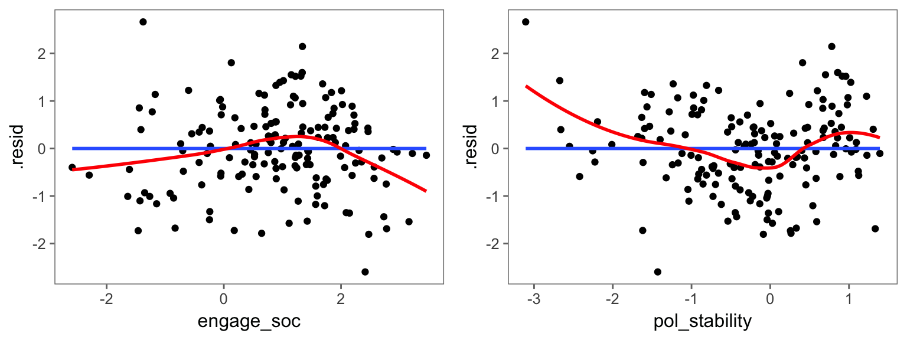
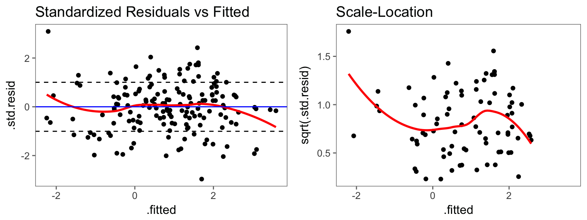

4 Residuenanalyse
load(url('https://github.com/systats/macro_project/raw/master/project_macro.Rdata'))
# filter data
dat <- project_macro %>%
filter(year == 2010)
fit0 <- lm(gov_cens ~ 1, data = dat) # Nullmodell
fit1 <- lm(gov_cens ~ engage_soc, data = dat) # bivariat
fit2 <- lm(gov_cens ~ engage_soc + pol_stability, data = dat) # multivariatEine Residuenanalyse dient dazu Modellannahmen statistischer Methoden bezüglich der Verteilung der Daten zu überprüfen. Damit soll die Validität und Reliabilität der Ergebnisse sichergestellt werden. Die OLS-Schätzparameter sind unter optimalen Bedingungen effizient unter allen linearen, unverzerrten Schätzern was auch Best Linear Unbiased Estimator (BLUE, Gauß-Markov-Theorem) genannt wird. Wenn hingegen eine eindeutige Annahmenverletzung vorliegt sind die Parameter verzerrt und der Signifikanztest nicht kann mehr interpretiert werden.
Zur Prüfung der Modellannahmen werden neben formalen Tests verstärkt Visualisierungen genutzt. So werden Modellierungsprobleme entdeckt und verbessert. Die Chancen der Modell-Verbesserung wahrzunehmen, entspricht der Grundhaltung der explorativen Datenanalyse ethz statistics. Es geht hier nicht um präzise mathematische Aussagen, Optimalität von statistischen Verfahren oder um Signifikanz, sondern um Methoden zum kreativen Entwickeln von Modellen, die die Daten gut beschreiben. Varianzanalyse. Was sind die Residuen gleich nochmal?
- Linearität der Parameter
- Unabhängigkeit der Residuen
- Homoskedastizität
- Normalverteilung der Residuen:
Alle benötigten Informationen können mit augment vom broom package extrahiert werden.
results <- augment(fit2, dat)
# results %>% head4.1 Linearität der Parameter
Die Lineare Regression schätzt die \(\beta\) Parameter intrinsisch linear. The most important mathematical assumption of LM is that its deterministic components is a linear function of the seperate predictors: \(y = \beta_1 x_1 + \beta_2 x_2 + ...\) (Gelman & Hill 2007: 45). Nicht lineare Assoziationen sind ohne zusätzliche Spezifikationen nicht erfassbar. Allerdings wird jeder Parameter separat (partiell) geschätzt (Additivität), wodurch x-Variablen einfach nicht-linear transformiert und trotzdem linear interpretiert werden können.
ggplot(results, aes(engage_soc, gov_cens)) + # aes(x, y)
geom_point() +
geom_smooth(method = "lm", se = F) +
geom_smooth(method = "loess", se = F, color = "red")
ggplot(results, aes(pol_stability, gov_cens)) + # aes(x, y)
geom_point() +
geom_smooth(method = "lm", se = F) +
geom_smooth(method = "loess", se = F, color = "red") 
Die blaue Linie zeigt den linearen Zusammenhang zwischen x und y. Durch method = "lm" kann das einfach dargestellt werden. Die Steigungen der gezeigten Regressionsgeraden entsprechen den geschätzten Parametern (0.1402374, 0.8666913, 0.3708442, 0.0964994, 0.0627666, 0.0788743, 1.453246, 13.8081601, 4.7017107, 0.1481018, 4.11735410^{-29}, 5.511039610^{-6}). Zusätzlich kann durch method = "loess" (rot) eine robuste Glättungsmethode eingesetzt werden, die auch nicht-lineare Tendenzen identifiziert und Ausreißer ignoriert. Das Streudiagramm für engage_soc und gov_cens zeigt einen eindeutig positiv, linearen Zusammenhang an. Zwar weißt die loess Funktion des rechten Streudiagramms auf eine nicht-linearen Zusammenhang hin, doch der Unterschied ist hier vernachlassigungswürdig gering. Die Regressionsgerade sollte eine gute Approximation darstellen.
4.2 Unabhängigkeit der Residuen
Hängen die unbeobachteten Fehler \(\varepsioln_i\) mit x zusammen? Zwar ist der bedingte Erwartungswert zwischen Prädikatoren und den Residuen ist per (OLS) Definition Null. Dennoch sollte diese Annahme getestet werden, da durch Fehlspezifikationen z.B. Autokorrelation oder omitted variable bais die Standardfehler falsch geschätzt werden könnten.
\[cov(x_i|\varepsilon_i) = 0\]
Um die Unabhängigkeit der Residuen zu testen, wird für jede Variable separat ein eigens Streudiagramm erstellt. Diese werden dann nach auffälligen Datenmustern (Korrelationen) untersucht. Wieder kommt neben lm auch loess zum Einsatz.
ggplot(data = results, aes(x = engage_soc, y = .resid)) +
geom_point() +
geom_smooth(method = "lm", se = F) +
geom_smooth(method = "loess", se = F, color = "red")
ggplot(data = results, aes(x = pol_stability, y = .resid)) +
geom_point() +
geom_smooth(method = "lm", se = F) +
geom_smooth(method = "loess", se = F, color = "red") 
Die blaue Linie symbolisiert die Regressionsgerade und darum streuen die unstandardisierten Residuen. Die Kernstreuung der Residuen (exklusive Ausreißer) scheint für beide Variablen unkorreliert zu sein. Neben einigen wenigen Ausreißern scheint keine der Variablen eine systematische Korrelation zu den Residuen zu besitzen.
4.3 Homoskedastizität
Die Fehlervarianz \(\varepsilon_i\) ist homoskedatisch, wenn die Residuen konstant, gleichverteilt um \(\hat y\) streuen (Homo = gleich; Skedastisch = Streuung). Die Schätzunsicherheit sollte zufällig, gleichmäßig über das gesamte Modell/ Schätzung verteilen. Mathematisch lässt sich das so formulieren:
\[ var(x_i|\varepsilon_i)=\sigma^2_\varepsilon\] Liegt keine Varianzhomogenität des Fehlers vor, spricht man von Heteroskedastizität, wodurch der Signifikanzschätzungen unbrauchbar werden. Deshalb ist eine Regression mit robusten Standardfehlern niemals verkehrt.
results %>%
ggplot(aes(.fitted, .std.resid)) +
geom_point() +
geom_smooth(se = F, color = "red") +
geom_hline(yintercept = 0, color = "blue") +
geom_hline(aes(yintercept = - sd(.std.resid)), linetype = 2) +
geom_hline(aes(yintercept = sd(.std.resid)), linetype = 2) +
ggtitle("Standardized Residuals vs Fitted")
ggplot(results, aes(.fitted, sqrt(.std.resid))) +
geom_point() +
geom_smooth(se = FALSE, color = "red") +
ggtitle("Scale-Location")
Auf der x-Achse wurden die geschätzten Werte (\(\hat y_i = \beta_0 + \beta_1x_i\)) und auf der y-Achse die unstandardisierten Residuen abgetragen. Die zwei gestrichelten, horizontalen Linien umfassen 68,3% der Fälle und unterstützen dabei die Kernstreuung visuell zu identifizieren. Abgesehen von ein paar wenigen Ausreißern streuen die Residuen gleichverteilt um die Vorhersage.
Zur abschließenden Klarheit kann ein Levene-Test durchgeführt werden, dessen der Nullhypothese lautet H0: die Varianzunterschiede zwischen den betrachteten Gruppen sind gleich Null. Zur Durchführung des Levine-Tests muss eine Gruppenvariable erstellt werden, welche die visuell inspizierten Varianzgruppen in einem Vektor repräsentieren. Wird der Test signifikant (\(p<0.05^*\)) ist die Annahme verletzt und man sollte zu Methoden zur robusten Schätzung der Standardfehler (SE) greifen.
4.4 Normalverteilung der Residuen
Die Normalverteilung der Residuen is the generally the least important assumption (Gelman & Hill 2007: 46). Die Schätzung der \(\beta\) Parameter ist davon überhaupt nicht beeinflusst. Die Signifikanz welche auf asymptotisch, normal verteilten Zufallsvariablen beruht hingegen schon. We do not recommend diagnostics of the normality of regression residuals (GH: 46). Und wir tuen es doch.
\[\varepsilon_i \sim N(0, \sigma^2)\]
ggplot(data = results, aes(.std.resid)) +
geom_histogram(aes(y = ..density..)) +
stat_function(fun = dnorm, lwd = 1, col = 'red') +
ggtitle("Standardnormalverteilung der Residuen")
ggplot(data = results, aes(sample = .std.resid)) +
stat_qq() +
geom_abline(colour = "red") +
ggtitle("Q-Q Plot")
Das kann mit einer einfachen Häufigkeitsverteilung der Residuen visuell eingeschätzt werden. Folgt die empirische Verteilung (schwarz) der theoretischen Normalverteilung (rot)? Die Residuen streuen annähernd normal verteilt um 0 mit einer konstanten Varianz. Beim Q-Q-Plot sollten die Punkte so nahe wie möglich an der roten Linie liegen. Abgesehen von ein paar Ausreißern am Ende der Verteilung sind die annähernd Residuen normal verteilt.
Wenn ein statistisches Modell
- alle bisher besprochenen Annahmen erfüllt,
- eine unverzerrte Zufallsstichprobe (Querschnitt) von einer Grundgesamtheit vor liegt sowie
- eine angemessene Modellspezifikation vorgenommen wurde
spricht man von independent and identically distributed errors. Anders formuliert - konsistent, erwartungstreu und normal verteilt..
\[\varepsilon_i \stackrel{iid}{\sim} N(0, \sigma^2)\]
Die Residuen sind also unkorreliert/unabhängig und homoskedatisch verteilt. Zusätzlich sollten die Residuen asymtotisch \(N\) mit einem Erwartungswert von 0 und einer konstanten Varianz \(\sigma^2\) um die Schätzung streuen.
4.5 Multikolinearität
(Multi-) Kollinearität liegt dann vor, wenn zwei (oder mehr) Prädikatoren stark linear voneinander abhängig sind.
Mit dem Toleranz-Test kann eingeschätzt werden, wie hoch der eigene Erklärungsbeitrag einer X- Variablen nach Kontrolle der übrigen Variablen ist (c.p).
\[T_k = 1−R_k^2\]
Ein Wert von kleiner 0.2 deutet auf eine starke Multikollinearität hin (lediglich ein Fünftel eigene Varianz). Werte nahe 0 implizieren, dass die jeweilige \(x_k\)-Variable nur noch sehr wenig eigene Erklärungsanteile erbringt bzw. umgekehrt. Liegen viele niedrige Toleranzwerte vor, sollten Stabilitätstests durchgeführt werden. Der Variance Inflation Factor basiert auf der Toleranz ermöglicht allerdings eine bessere Interpretation.
\[VIF_k= \frac{1}{T_k} = \frac{1}{(1-R_k^2)}\]
Je größer der VI-Faktor einer Variablen k, desto stärker sind die Hinweise auf Multikollinearität. Als Daumenregel werden häufig VIF-Werte von über 10 als zu hoch eingestuft (andere Regel: 5 gilt als harte Schwelle \(\rightarrow\) 1/0,2).
car::vif(fit2)## engage_soc pol_stability
## 1.144117 1.1441174.6 Ausreißer
results %>%
arrange(desc(.cooksd)) %>%
select(country, engage_soc, pol_stability, gov_cens) %>%
top_n(5)## country engage_soc pol_stability gov_cens
## 1 Belgium 1.341129 0.7815902 3.738099
## 2 Estonia 2.007244 0.5983367 3.316389
## 3 Germany 2.189425 0.7848618 3.218514
## 4 Switzerland 3.456124 1.2282151 3.448661
## 5 Finland 3.217284 1.3926494 3.340424# Points size reflecting Cook's distance
ggplot(data = results, aes(x = .fitted, y = .resid, size = .cooksd)) +
geom_hline(yintercept = 0, colour = "firebrick3") +
geom_point(alpha = .5) +
geom_text(aes(label = rownames(results))) +
scale_size_area("Cook’s distance")Mit dem sjPlot package geht alles viel einfacher.
library(sjPlot)
sjp.lm(fit2, type = "ma")## # A tibble: 2 x 3
## models adjusted.r2 aic
## <chr> <dbl> <dbl>
## 1 original 0.6434510 432.8847
## 2 updated 0.6804059 410.5064